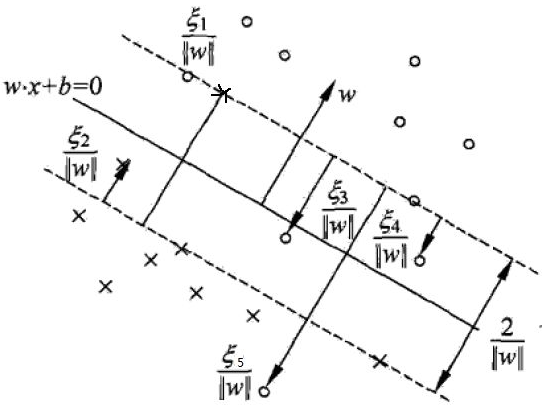

支持向量机算法原理(二)¶
线性可分问题的支持向量机学习算法，对线性不可分的训练数据是不适用的。通常情况下，训练数据中如果存在一些特异点，会严重影响分类模型的效果。
软间隔最大化¶
为了解决这个问题，可以对每个样本(x^{(1)},y^{(1)}) 引进一个松弛变量\xi_i\ge 0 ，使函数间隔加上松弛变量大于等于1，这样，约束条件变为： $$ y{(i)}(wT \cdot x^{(i)}+b)\ge 1-\xi_i $$ 这时样本到超平面的函数距离的要求就放松了，之前一定要大于等于1，现在只需要加上一个\xi_i 大于等于1就可以了。同时，对于每个松弛变量\xi_i，都需要支付一个代价\xi_i。因此线性不可分的支持向量机学习问题变为： $$ \begin{align} \min_{w,b,\xi}&\quad \frac{1}{2}||w||2_2+C\sum_{i=1}m\xi_i \notag \ s.t.\quad & y{(i)}(wT x^{(i)}+b)\ge 1-\xi_i\ & \xi_i\ge 0 \qquad (i=1,2,...,m) \notag \end{align} $$ 这里最小化目标函数既希望\frac{1}{2}||w||^2_2尽量小即间隔尽量大，同事使误分类点尽可能少。C为惩罚参数，用来调和两者关系的，当C越大对误分类的惩罚越大，C越小对误分类的惩罚越小。在实际应用中需要调参选择。
软间隔支持向量机优化¶
首先将软间隔最大化的约束问题(2)转化为无约束问题，拉格朗日函数为： $$ L(w,b,\alpha,u)=\frac{1}{2}||w||2_2+C\sum_{i=1}m\xi_i-\sum_{i=1}m\alpha_i[y{(i)}(wTx{(i)}+b)-1+\xi_i]-\sum_{i=1}^m\mu_i\xi_i $$ 其中\alpha_i\ge0,\mu_i\ge0，均为拉格朗日乘子。
现在的优化目标是： $$ \min_{w,b,\xi}\,\max_{\alpha\ge0,\mu\ge0}L(w,b,\alpha,\mu) $$ 由于优化目标满足KKT条件，可以通过拉格朗日对偶将原始优化问题转化为等价的对偶问题： $$ \max_{\alpha\ge0,\mu\ge0}\,\min_{w,b,\xi}L(w,b,\alpha,\mu) $$ 首先我们可以求优化函数对于w,b,\xi的极小值，接着再求拉格朗日乘子\alpha,\mu的极大值。
(1)求L(w,b,\alpha,\mu)关于w,b,\xi的极小值 $$ \begin{align} \frac{\partial L}{\partial w}&=w-\sum_{i=1}m\alpha_iy{(i)}x^{(i)}=0\quad \Longrightarrow \quad w=\sum_{i=1}m\alpha_iy{(i)}x^{(i)}\ \frac{\partial L}{\partial b}&=-\sum_{i=1}m\alpha_iy{(i)}=0\quad \Longrightarrow \quad \sum_{i=1}m\alpha_iy{(i)}=0\ \frac{\partial L}{\partial \xi}&=C-\alpha_i-\mu_i=0\quad \Longrightarrow \quad C=\mu_i+\alpha_i \end{align} $$ 将式(6)(7)(8)带入式(2)可以消去w和b，得到： $$ \begin{align} L(w,b,\xi,\alpha,\xi) &=\frac{1}{2}||w||2_2+C\sum_{i=1}m\xi_i-\sum_{i=1}m\alpha_i[y{(i)}(wTx{(i)}+b)-1+\xi_i]-\sum_{i=1}^m\mu_i\xi_i\ &=\frac{1}{2}||w||2_2-\sum_{i=1}m\alpha_i[y{(i)}(wTx{(i)}+b)-1]+\sum_{i=1}mC\xi_i-\sum_{i=1}m\alpha_i\xi_i-\sum_{i=1}m\mu_i\xi_i\ &=\frac{1}{2}||w||2_2-\sum_{i=1}m\alpha_i[y{(i)}(wTx{(i)}+b)-1]+\sum_{i=1}m\xi_i(C-\alpha_i-\mu_i)\ &=\frac{1}{2}||w||2_2-\sum_{i=1}m\alpha_i[y{(i)}(wTx^{(i)}+b)-1]\ &=\frac{1}{2}wTw-\sum_{i=1}m\alpha_iy{(i)}wTx{(i)}-\sum_{i=1}m\alpha_iy{(i)}b+\sum_{i=1}m\alpha_i\ &=\frac{1}{2}wT\sum_{i=1}m\alpha_iy{(i)}x{(i)}-wT\sum_{i=1}m\alpha_iy{(i)}x{(i)}-\sum_{i=1}m\alpha_iy{(i)}b+\sum_{i=1}^m\alpha_i\ &=-\frac{1}{2}wT\sum_{i=1}m\alpha_iy{(i)}x{(i)}-\sum_{i=1}m\alpha_iy{(i)}b+\sum_{i=1}^m\alpha_i\ &=-\frac{1}{2}(\sum_{i=1}m\alpha_iy{(i)}x{(i)})T(\sum_{i=1}m\alpha_iy{(i)}x{(i)})-b\sum_{i=1}m\alpha_iy{(i)}+\sum_{i=1}m\alpha_i\ &=-\frac{1}{2}\sum_{i=1}m\alpha_iy{(i)}(x{(i)})T\sum_{i=1}m\alpha_iy{(i)}x{(i)}-b\sum_{i=1}m\alpha_iy{(i)}+\sum_{i=1}m\alpha_i\
&=-\frac{1}{2}\sum_{i=1}m\alpha_iy{(i)}(x{(i)})T\sum_{i=1}m\alpha_iy{(i)}x{(i)}+\sum_{i=1}m\alpha_i\ &=-\frac{1}{2}\sum_{i=1}m\sum_{j=1}m\alpha_iy{(i)}(x{(i)})T\alpha_jy{(j)}x{(j)}+\sum_{i=1}m\alpha_i\ &=\sum_{i=1}m\alpha_i-\frac{1}{2}\sum_{i=1,j=1}m\alpha_i\alpha_j y{(i)}y{(j)}(x{(i)})Tx^{(j)}\ \end{align} $$ 等式(9)-(12)合并同类项利用C=\alpha_i+\mu_i进行化简；等式(12)(13)利用||w||^2_2=w^T w，并展开括号；等式(14)(15)合并同类项；等式(15)-(17)利用w=\sum_{i=1}^m\alpha_iy^{(i)}x^{(i)} 且常量的转置就是其本身，只有x^{(i)}被转置；等式(17)~(18)使用了$ \sum_{i=1}m\alpha_iy{(i)}=0$ ；等式(18)~(20)互换位置，进行整理。
式(20)的形式和线性SVM是一样的，软间隔支持向量机不同的地方在于约束条件。最终优化目标的数学形式： $$ \begin{align} \max_{\alpha} \; \sum_{i=1}m\alpha_i&-\frac{1}{2}\sum_{i=1}m\sum_{j=1}^m\alpha_i\alpha_j y{(i)}y{(j)}(x{(i)})Tx^{(j)}\ s.t. \qquad &\sum_{i=1}^m \alpha_i y^{(i)}=0 \notag\ &C-\alpha_i-\mu_i=0\notag\ &\alpha_i\ge 0 \notag\ &\mu_i\ge 0 \qquad i=1,2,...,m \notag \end{align} $$ 利用C-\alpha_i-\mu_i=0,\alpha_i\gt0,\mu_i\gt0这3个式子，可以消去\mu_i，只留下\alpha_i，也就是C\ge\alpha_i\ge0。将(24)可以转变为： $$ \begin{align} \min_{\alpha} \quad &\frac{1}{2}\sum_{i=1}m\sum_{j=1}m\alpha_i\alpha_j y{(i)}y{(j)}(x{(i)})Tx^{(j)}- \sum_{i=1}^m\alpha_i\ s.t. \qquad &\sum_{i=1}^m \alpha_i y^{(i)}=0 \notag\ &0\le \alpha_i\le C \qquad i=1,2,...,m\notag\
\end{align} $$ 式(22)就是软间隔最大化的支持向量机模型，同线性可分支持向量机相比仅仅只是多了一个约束条件0\le\alpha_i\le C同样地依然可以使用SMO算法求上式极小化时对应的\alpha向量就可以求出w和b。
## 支持向量
在线性可分的支持向量机中，最优解\alpha=(\alpha_1^*,\alpha_2^*,..,\alpha_m^*)^T 中对应于\alpha_i^*\gt0的样本(x^{(i)},y^{(i)})的实例点x^{(i)}被称为支持向量。对于软间隔支持向量机的支持向量此时就比较复杂。

对软间隔支持向量机，KKT条件要求： $$ \left { \begin{array} \alpha_i\ge0,\qquad\mu_i\ge0\ y{(i)}(wT x^{(i)}+b) -1+\xi_i\ge 0\ \alpha_i(y{(i)}(wT x^{(i)}+b) -1+\xi_i)=0\ \xi_i\ge0 ,\quad \mu_i\xi_i=0 \end{array} \right. $$ 于是对于任意的样本(x^{(i)},y^{(i)})，总有\alpha_i=0或者y^{(i)}(w^Tx^{(i)}+b)=1-\xi_i。可以得：
- 若\alpha_i=0 则该样本不会对分离超平面有任何影响，这些点被正确分类
- 若0\lt \alpha_i\lt C，根据C=\alpha_i+\mu_i得\mu_i>0，则\xi_i=0,y^{(i)}(w^T x^{(i)}+b) -1=0即点是支持向量。
- 若\alpha_i=C，说明该点可能是一个异常点，此时需要进一步检查\xi_i：
- 如果$0\lt \xi_i \lt 1 $，那么点正确分类，落在了超平面和子集类别的支持向量之间；
- 如果\xi_i=1，那么点落在了分离超平面上；
- 如果\xi_i>1，那么点在超平面的另一侧，则该样本被错误分类。
软间隔支持向量机学习算法¶
输入：训练数据D=\{(x^{(1)},y^{(1)}),(x^{(2)},y^{(2)}),...,(x^{(m)},y^{(m)}),\}，其中x^{(i)}\in\mathbb{R}^n,y\in\{+1,-1\}
输出：分离超平面和分类决策函数
(1)选择惩罚系数C>0，构造约束优化问题 $$ \begin{aligned} \min_{\alpha}&\sum_{i=1,j=1}^m \alpha_i\alpha_jy{(i)}y{(j)}(x{(i)})Tx{(j)}-\sum_{i=1}m\alpha_i\ s.t.&\quad \sum_{i=1}^m \alpha_i y^{(i)}=0\ &\quad 0\le \alpha_i \le C \end{aligned} $$ (2)用SMO算法求出上式最小时对应的\alpha向量值\alpha^*
(3)计算w^*=\sum_{i=1}^m \alpha_i^*y^{(i)}x^{(i)}
(4)找出所有的S个支持向量即满足0\lt \alpha_s\lt C对应的样本(x_s,y_s)，通过y_s(\sum_{i=1}^S \alpha_i y^{(i)}(x^{(i)})^Tx^s+b)=1，计算出每个支持向量(x^{s},y^{s})对应的b^*_s=y^{(s)}-\sum_{i=1}^S \alpha_i y^{(i)}(x^{(i)})^Tx^{s}，所有的b_s^*对应的平均值即为最终的b^*=\frac{1}{S}\sum_{i=1}^S b^*_s
(5)求得分离超平面w^*x+b^*=0，分类决策函数f(x)=sign(w^*x+b^*)
合页损失函数¶
线性支持向量机还有另一种解释，就是最小化以下目标函数： $$ \sum_{i=1}m[1-y{(i)}(w\cdot x{(i)}+b)]_+\lambda||w||2_2 $$ 其中第一项是经验损失或经验风险，函数L(y(w\cdot x+b))=[1-y(w\cdot x+b)]_+为合页损失函数(hinge loss function)。下标"+"表示以下取正值的函数 $$ [z]_+=\left { \begin{aligned} z,\quad z>0\ 0,\quad z\le0 \end{aligned} \right. $$ 可以证明最小化式(24)等价于式(2)。